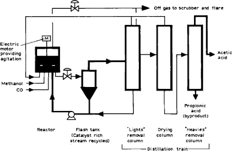
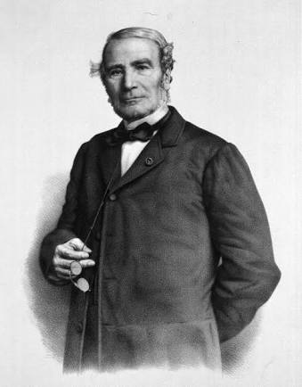

Coba Coba
History
Acetone is the organic compound that has the formula (CH3)2CO. Acetone was first produced by alchemists during the late Middle Ages.In any event, it was well known at the beginning of the seveneenth century and was used for various medical purpose.Although it could be produced by the dry distillation of several metal acetates, the most frequently used was lead acetate, and consequently acetone was knwon as spirit of Saturn.
Possibly the most vivid description of the preparation of acetone is given by Jean Beguin, who established a school of pharmacy in Paris a few years after the turn of seventeenth century. To save time in dictating notes, he wrote a textbook in Latin, " Tyrocinium Chymicum", published privately in 1610. he cautions that it is necessary that the lead acetate must be distilled into a receiver of sufficient capacity

Jean Beguin
In 1832, French chemist (Jean-Baptiste Dumas) and German chemist (Justus von Liebig) determined the empirical formula for acetone.In 1833, the French chemist, Antoine Bussy named acetone by adding the suffix -one to the stem of the corresponding acid. In 1852, English chemist, Alexander William Williamson realized that acetone was methyl acetyl.
Antoine Bussy
Do you know that acetone was made from Clostridium Acetobutylicum ?
During World War 1 acetone was developed the process for industrial production of acetone by Chaim Weizmann. Weizmann needed something to help him create the method of Bacterial Fermentation, so he made acetone using the bacterium Clostridium Acetobutylicum. But the way it was abandoned due to the low acetone of butanol produced.

Clostridium Acetobutylicum
Features
Acetone is organic compound. Acetone have another name there is 2-propanone.the functional group of acetone is ketone.A ketone has a carbon double bonded to an oxygen and a bond with two other separate carbon atoms.Acetone's functional group is the carbonyl group. Acetone's functional group, being the carbonyl group, is polar. This is because the electronegativity of the oxygen is greater than that of the carbon, creating a polar bond. Acetone's melting and boiling points are much lower than that of waters, because acetone does not have as strong of intermolecular forces as water does.